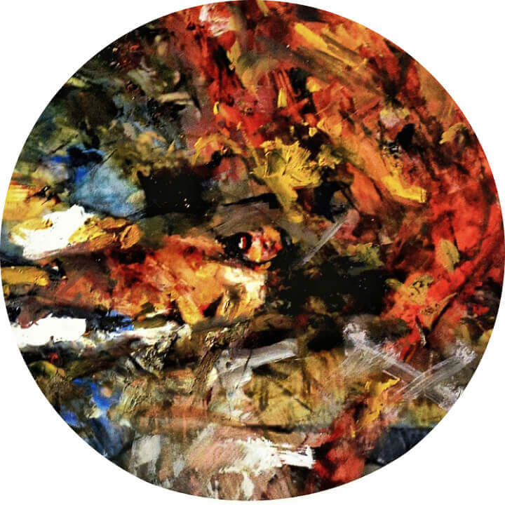

Trittico di Metamorfosi Antropologica 3
2017, tecnica mista, olio su carta, 53x30
La città fredda, seria, sottomessa si mobilità, contro la soggettazione, vuole autoprodurre il suo ritmo, il suo spazio e la sua produzione. Si respira la speranza, una collettiva fiorente speranza. I lavoratori si sentono una parte, una parte integrante e decisiva della società. I padroni di questa società si sentono minacciati, da quello che sanno produrre, sanno creare, sanno sperare nel futuro. L'indeterminatezza e l'indifferenza batte questa atmosfera vivace. Gli operai rimangono isolati, gli unici. Gli operai resistono per ciò che era considerato impossibile, gli operai resistono per mesi pur rimanendo soli, costoro hanno dimostrato la possibilità di ciò che era ritenuto impossibile secondo "tutti". Loro hanno resistito contro l'soggettazione, contro alienazione, hanno fatto e mostrato un altro mondo, hanno ribadito la necessità della solidarietà e coesistenza in combattere.
